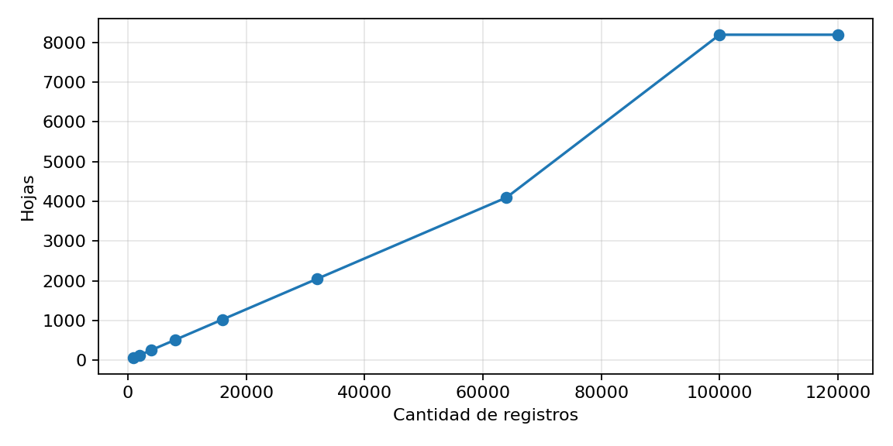
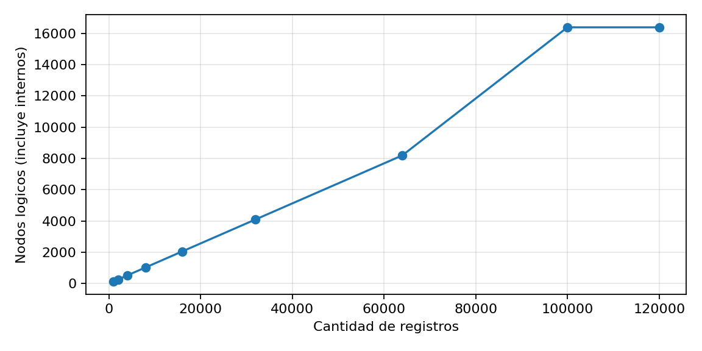
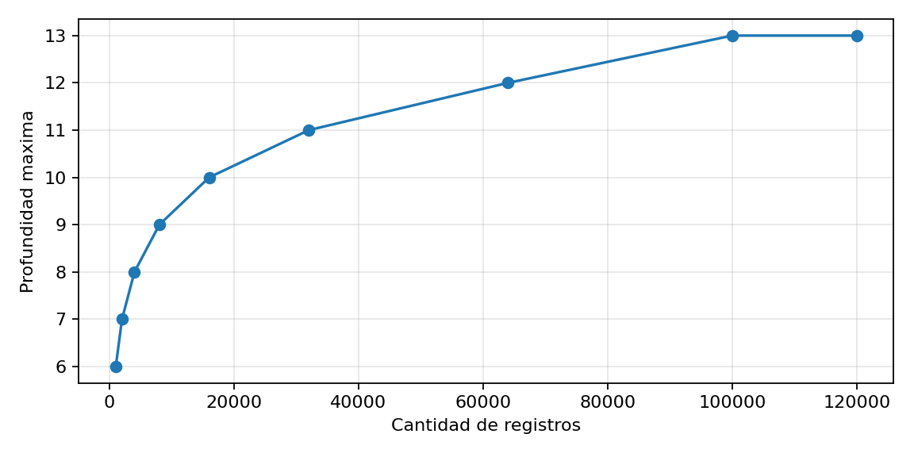
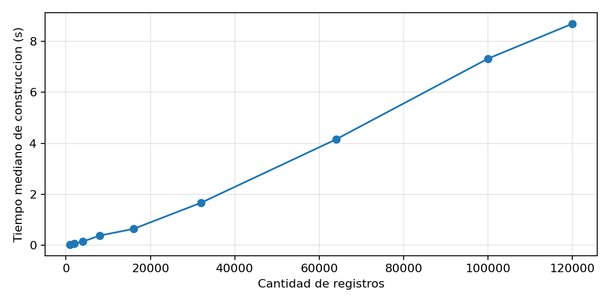
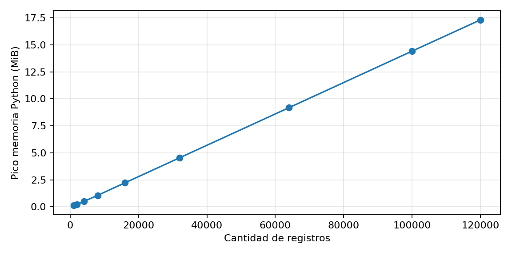

Experimento: 2026-10-11T22:36:51 | origen: C:\Users\danna\OneDrive\Escritorio\Tesis\4toCuatri\pailier\data\processed\roads_points_int.csv | capacidad por hoja: 16 | semilla: 42 | repeticiones: 3
Alcance: se miden la particion recursiva y las hojas conservadas. No se mide el cifrado. Los nodos internos se cuentan durante la construccion, pero no se almacenan. La memoria es una aproximacion del pico rastreado por tracemalloc, no el tamano serializado del indice cifrado. Sin ampliacion sintetica del CSV.
| registros | dimensiones | capacidad_hoja | nodos_logicos | nodos_internos | hojas | profundidad_maxima | registros_hoja_min | registros_hoja_promedio | registros_hoja_max | tiempo_mediano_seg | tiempo_min_seg | tiempo_max_seg | pico_memoria_python_mib | datos_ampliados_sinteticamente |
|---|---|---|---|---|---|---|---|---|---|---|---|---|---|---|
| 1000 | 2 | 16 | 127 | 63 | 64 | 6 | 15 | 15.625 | 16 | 0.020817 | 0.019879 | 0.021694 | 0.1398 | False |
| 2000 | 2 | 16 | 255 | 127 | 128 | 7 | 15 | 15.625 | 16 | 0.053185 | 0.051928 | 0.065678 | 0.2369 | False |
| 4000 | 2 | 16 | 511 | 255 | 256 | 8 | 15 | 15.625 | 16 | 0.139197 | 0.123997 | 0.142951 | 0.4988 | False |
| 8000 | 2 | 16 | 1023 | 511 | 512 | 9 | 15 | 15.625 | 16 | 0.375026 | 0.371054 | 0.426524 | 1.0592 | False |
| 16000 | 2 | 16 | 2047 | 1023 | 1024 | 10 | 15 | 15.625 | 16 | 0.637499 | 0.62882 | 0.671069 | 2.2193 | False |
| 32000 | 2 | 16 | 4095 | 2047 | 2048 | 11 | 15 | 15.625 | 16 | 1.663715 | 1.647117 | 1.822964 | 4.5386 | False |
| 64000 | 2 | 16 | 8191 | 4095 | 4096 | 12 | 15 | 15.625 | 16 | 4.154586 | 4.031104 | 4.388929 | 9.1773 | False |
| 100000 | 2 | 16 | 16383 | 8191 | 8192 | 13 | 12 | 12.207 | 13 | 7.326153 | 7.030446 | 7.857948 | 14.4091 | False |
| 120000 | 2 | 16 | 16383 | 8191 | 8192 | 13 | 14 | 14.6484 | 15 | 8.696753 | 8.439684 | 8.770917 | 17.3015 | False |




